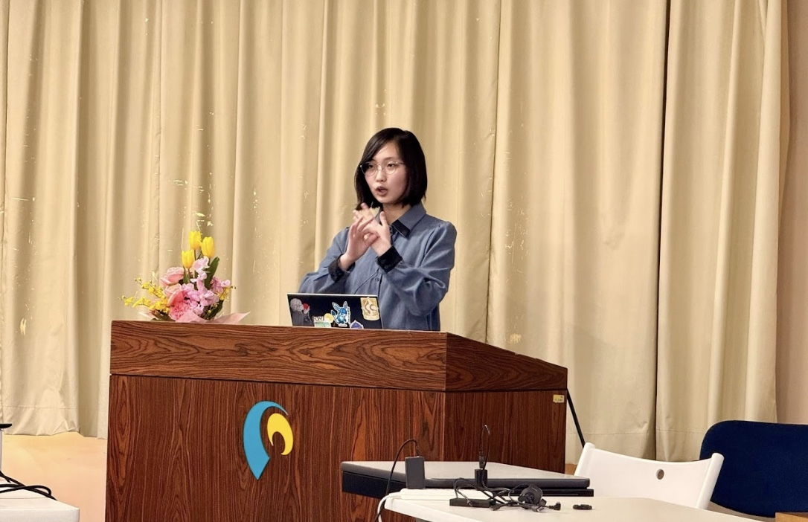

ろう・難聴者と聴者のコミュニケーション促進を目指した研究

取り組みの概要
ピクシーダストテクノロジーズ(株)と共同研究を実施しました。同社開発のマイクアレイ音源位置推定型音声認識システム「VUEVO」を用い、ろう・難聴者（DHH）1名と聴者3名の複数人会話支援を評価。
同心円表示・話者区別ありタイムライン（TL）・なしTLの3表示を、ワードウルフや雑談下で比較し、主観評価とNASA-TLXによる認知的負荷を測定しました。話者識別の可視化が会話参加の質を向上させることを確認しました。
- 連携先
- ピクシーダストテクノロジーズ株式会社
- 期間
- 2024年11月〜2025年5月
- 関わった学生の領域
- 情報系
- 主体教員
- 白石優旗 教授
- 学生の関わり方
- プロジェクト型授業（3年生主体、大学院生・卒業生もサポート）
学生の学びと関わり
学生の学び
当事者視点を活かした学び・研究が、実際に社会で役立つ可能性があることを実感できる。
学生の役目
共同研究、学会発表。
求められた専門性
当事者視点を活かした研究・学会発表。
連携先にとっての価値
当事者視点でのUD検証と改善提案。
成果
- 情報処理学会研究会（AAC）で発表
連携先担当者の評価
今回、同心円表示での話者識別の可視化が複数人の会話での参加の質を向上させることを確認でき、学術的な評価を通じて製品特性を知ることができました。認知的負荷については表示形式に差は見られず、文字情報のばらつきがない方が認知負荷が少ない可能性もあることが大変参考になりました。より良いUIや、場面やニーズに合わせた表示調整ができるよう、得られた知見を今後のアップデートに活かしていきたいと思います。ピクシーダストテクノロジーズ ご担当者